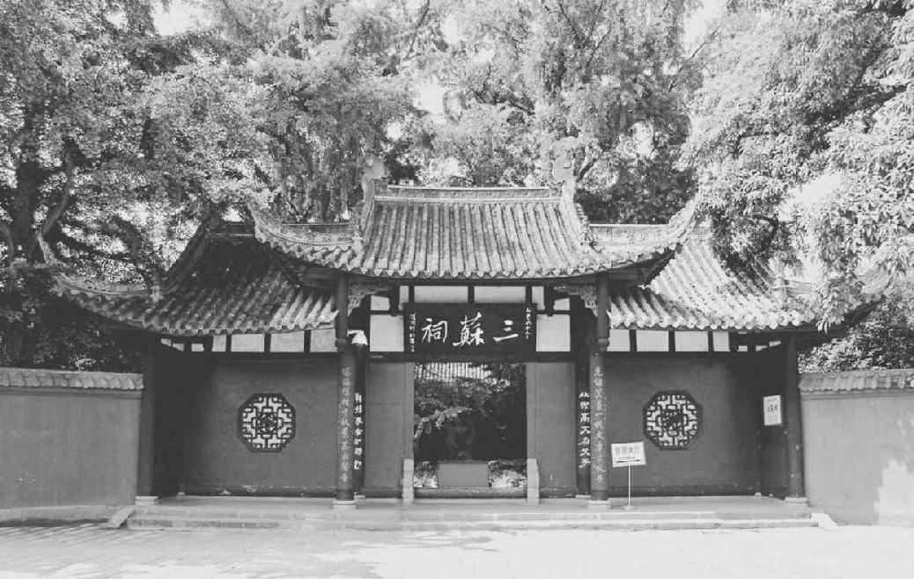
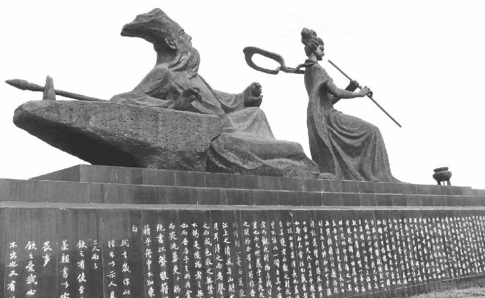

第二章 眉山
自长江逆流而上，经汉口，过名满天下的三峡，便进入了中国西南的一大省份——四川，再沿江上行，过重庆，直到水源，便可看见一尊大石佛，其高三百六十英尺，是由江边一个悬崖峭壁雕刻而成。在此四川省西部的边界，在雄伟高耸的峨眉山麓，就是乐山，当年在苏东坡时名为嘉州，岷江就在此处流入长江。岷江自大西北原始部落聚居的山岭上，汹涌澎湃奔流而至，与来自峨眉的另一河流汇合后，直向乐山的大石佛奔腾而来，洪流渐渐折向东南，然后向东，一直流入东海。在千年万古为阴云封闭的峨眉山的阴影中，在乐山以北大约四十英里之外便是眉州的眉山城，在中国文学史上，这座小镇便以当地一个杰出的文学世家出了名。这一家便是苏家，亦即人所周知的三苏。父亲苏洵生有二子，长子苏轼，字子瞻，号东坡；次子苏辙，字子由，父子三人占唐宋八大家古文中的三席之地。
在乐山，当年也和现在一样，旅客可以乘一小舟自玻璃江逆流而上直到眉山。玻璃江因其水色而得名，因为在冬季，水色晶莹深蓝，夏季之时，激流自山峦间奔流而至，水色深黄。玻璃江为岷江一支流，因眉山位于乐山与四川省会成都两地之间，凡欲赴省会之旅客，必须经过眉山。若坐帆船上行，可以看见蟆颐山临江而立。山势低而圆，与江苏之山形状相似。此处即是眉山，即三苏的故乡。幸亏战国时代李冰的治水天才，当地才有完整的水利灌溉沟渠，千余年来，在良好维护之下，始终功能完好，使川西地区千年来沃野千里，永无水患。蟆颐山的小山丘下，稻田、果园、菜圃构成广漠的一带平原，竹林与矮小的棕树则点缀处处。自南方进入眉山镇，沿着整洁的石板路走，便可到达城镇的中心。眉山并非一个很大的城市，但住家颇为舒适。十二世纪一个诗人曾描述眉山，他说眉山镇上街道整洁，五六月间荷花盛放，最为有名。当地种植荷花已成一项庞大行业，因为邻近各市镇的荷花贩子都来此地采购荷花。人在街上步行之时，会见到路旁许多荷花池，花朵盛开，香气袭人。在纱縠巷，有一座中等结构的住宅。自大门进入，迎面是一个漆有绿油的影壁，使路上行人不至于看见住宅的内部。影壁之后，出现一栋中型有庭院的房子。在房子附近，有一棵高大的梨树、一个池塘、一片菜畦。在这个小家庭花园之中，花和果树的种类繁多，墙外是千百竿翠竹构成的竹林。
宋仁宗景祐三年（一〇三六年）十二月十九日，在这栋房子里，一个婴儿脚踢着襁褓的包布，发出了啼声。自从第一个儿子夭折之后，这个初生的婴儿便成了这家的长子。现在在这儿趁着这个婴儿并没有什么特别的活动，也可以说只像其他的婴儿一个样的活动之时，我们利用这段时光把这一家大略看一下吧。不过关于这个孩子的生日先要说一说，不然会使海外中国传记的读者感到纷乱。在中国，小儿初生便是一岁，这是因中国人历来都愿早日达到受人尊敬的高龄的缘故。第一个新年一到，人人都长了一岁，这个婴儿就是两岁。根据中国的计算法，一个人在他生日前来算，他总比实际年龄大两岁，在生日之后算，总是大一岁。在本书里，年龄是按西方方法计算的，不再精确估计生日。不过在论到苏东坡，还是要顾到一点儿精确。因为他一降生就是一岁大，那是十二月十九日，在新年来临时，他就已经两岁大——实际上他还不足半个月。因为他的生日是在年终，按中国年岁计算，他总是比实际年龄大两岁。
乐山大佛 石像 唐
乐山大佛坐落在峨眉山东麓的栖鸾峰，依山开凿，又名凌云大佛，是世界现存最大的一尊摩崖石像。苏东坡的出生地就。在这座赫赫有名的大佛北面的眉山城。现在眉山的旅游宣传语就是“东坡故里，中国词乡，诗书古城，道教圣地，长寿之邦”。
关于他的生日要说的第二件事，他的降生是在天蝎宫（实际是摩羯座——编者注）之下。照他自己的话说，这就是为什么他一生饱经忧患的原因，不管是好谣言，还是坏谣言，他总是谣言的箭垛——太好的谣言，他当之有愧；太坏的谣言，他无端受辱。这种命运和韩愈的命运相似。韩愈也是降生于同样的星座，也是因固执己见而被朝廷流放。那栋宅院中，一间屋子墙的正中挂着一张仙人的画像，画的是八仙中的张果老。婴儿的父亲苏洵现年二十七岁，正是一生中精神上多灾多难的岁月。他在市场上看见这张画像，乃用一只玉镯子将其换来。在过去的七年之中，每天早晨他向这幅张果老像祷告。数年前他妻子已经生了一个女孩儿，再生的就是那个夭折的孩子。他过去一直盼望生个儿子，现在是如愿以偿了。他必然是非常快乐。然而我们也知道，当时他正在饱受屈辱折磨，痛苦万分。
苏家总算是个小康之家，自己有田产，也许比一般中产之家还较为富有。家中至少有两个侍女，并且家里还能给苏东坡和他姐姐各雇用一个奶妈。等弟弟辙生下时，家中还能再雇一个奶妈。奶这兄弟二人的两个奶妈，按照中国的习惯，要一直跟她们照顾到成年的孩子过活一辈子。
苏东坡一降生，祖父仍然健在，正是六十三岁。以前年轻时，生得高大英俊，身体健壮，酒量极大，慷慨大方。后来，苏东坡已经成为当代公认的文坛泰斗，官居翰林学士知制诰之职，家已移居到开封城皇宫附近。一天，几个至交与仰慕他的人前去拜访，正好那天是他祖父的寿诞之期，他就开始向来客述说这位怪老汉的几件趣事。老人不识字，但是人品不凡。那时他们正住在乡间，自己广有田地。他祖父不像别家那样储存食米，却以米换谷，在自家谷仓中存了三四万石之多。别人不知道他何以如此。随后荒年歉收，他祖父乃开仓散粮，先给他自己的近族近亲，然后才轮到他妻子的娘家人，再后给他家的佃农，最后给同村的贫民。这时别人才知道他当初为什么广存稻谷——因为稻谷可藏数年，而稻米天潮时则易霉坏。他祖父衣食无忧，优哉游哉，时常携酒一樽，与亲友在青草地上席地而坐，饮酒谈笑，以遣时光。大家饮酒高歌，规矩拘谨的农人都大为吃惊。
一天，老汉正在喝酒取乐，重要消息来到了。他的二儿子——苏东坡的叔父，已赶考高中。在邻近还有一家，儿子也是同样考中。那是苏东坡的外祖母程家。因为苏程连亲，所以可以说是双喜临门。程家极为富有，算得上是有财有势，早就有意大事铺张庆祝，而苏家的老汉则并无此意。知父莫如子，苏东坡的叔叔亲自派人由京中给老人家送上官家的喜报、官衣官帽、上朝用的笏板，同时还有两件东西，就是太师椅一张，精美的茶壶一个。喜信到时，老汉正在醺醺大醉，手里攥着一大块儿牛肉吃。他看见行李袋里露出官帽上的红扣子，一下子就明白了。但是当时酒意未消，他拿起喜报，向朋友们高声宣读，欢乐之下，把那块儿牛肉也扔在行李袋里，与那喜报官衣官帽装在一处。他找了一个村中的小伙子为他背行李袋，他骑着驴，往城里走去。那是他一生最快乐的日子。街上的人早已听到那个考中的消息，等一看见酩酊大醉的老汉骑在驴背上，后面跟着一个小子扛着一件怪行李，都不禁大笑。程家以为这是一件令人丢脸的事，而苏东坡则说只有高雅不俗之士才会欣赏老人质朴自然之美。此老汉也是一个思想开通的人。一天，他在大醉之下走进一座庙里，把一尊神像摔得粉碎。他原来早已对那尊像怀有恶感，并且那尊神像全村人都很惧怕，更可能的理由是对那庙里的庙祝存有敌意，因为他常向信徒们勒索钱财。 
三苏祠 建筑 始建于宋
三苏祠位于眉山市城郊，是苏洵、苏轼、苏辙的故居，明代改宅为祠，祭祀三苏。三苏父子以其辉煌的文学成就同登“唐宋八大家”之列，千古文章辉耀古今。三苏在文学上既同出一源，又各具特色，人称“凝练老泉，豪放东坡，冲雅颍滨”。
苏东坡的酒量倒不是由祖父那里继承而来，但是他的酒趣则是得自祖父，以后不难看出。这位不识字的老汉的智慧才华，原是在身上深藏不露，结果却在他儿子的儿子的身上光荣灿烂地盛放了。身心精力过人的旺盛，胸襟气度的开阔，存心的纯厚正直，确都潜存在老人的身上。苏家在当地兴起，和别的望族世家之兴起一样，也是合乎无限的差异变化与物竞天择的自然规律的。对于苏东坡外婆家的才智如何，我们尚无明证，但是苏程两家血统的偶然混合，不知在何种情形之下竟产生了文学天才。
此外，祖父对他孙子的文学生活并无什么大的影响，只是一点，祖父的名字是“序”。当年对一个作家而言，这确是最为难的事，因为苏东坡是个名作家，必须写很多序。苏东坡若用“序”这个字，便是对祖先失去尊敬。于是，他只好把他作品中所有的“序”都改称为“引”。不称父母与祖父母的名讳，在中国是很古老的风俗，有时候十分麻烦，尤其父亲的名字是很普通的字时为甚。在中国最伟大的史学家司马迁的皇皇巨著中，我们找不到一个“谈”字，因为“谈”是他父亲的名字。有一个人名叫“赵谈”，司马迁竟擅自改为“赵通”。同样，《后汉书》的作者范晔必须避开他父亲的名字“泰”，所以今天我们在他那一百二十卷的大作中找不到一个“泰”字。诗人李翱的父亲名“今”，于是此位诗人必须用一个古字代替现代这个普通字“今”。这种禁忌是由禁写当朝皇帝名字的禁忌而起的。科举考试时，考生的名字之中若有一个字与当朝已驾崩的皇帝的名字相同，则被逐出考场。可是皇帝通常总是称年号或谥号，而不称名，所以就有不少考生忘记了皇帝的名字，而真被逐出考场。有时一个皇帝也会在这方面犯了禁忌，因为谁也不易随时记着十代祖先的名字。一次，一个皇帝一时没记清楚，在给一座亭子起名字时用错了字，忽然想起来犯了禁忌，误用祖先之名。于是，刚为那个亭子颁赐了名字，立刻又改换。
苏东坡的父亲苏洵，天性沉默寡言，就其政治上的抱负而言，他算是抑郁终生，不过在去世之前，他想追求的文名与功名在他两个儿子身上实现了。苏洵禀赋颖异、气质谨严，思想独立、性格古怪，自然不是易于与人相处的人。直至今日，人人都知道他到二十七岁时才发奋读书。大人常举这件事来鼓励年轻人，告以只要勤勉奋发，终会成功的。当然，聪明的孩子也许会推演出相反的结论，那就是孩童之时不一定非要专心向学。事实上，苏洵在童年并非没有读书作文学习的机会，而似乎是苏洵个性强烈，不服管教，必又痛恨那个时代的正式教育方式。我们都知道好多才气焕发的孩子确实如此。若说他在童年时根本没读书写字做文章，恐非事实。他年轻之时，必然给程家有足够好的印象，不然程家不会愿意把女儿嫁给他的。另外，同样令人惊异的是，他晚到二十七岁才发奋读书，而能文名大噪，文名不为才气纵横的儿子的文名所掩，这究属极不寻常之事。
大约他得了长子之后，自己才态度严肃起来，追悔韶光虚掷，痛自鞭策。他看到自己的哥哥、自己的内兄，还有两个姐丈，都已科考成功，行将为官做吏，因而觉得含羞带愧，脸上无光。此等情事对一个平庸之才或许不会有什么刺激，但对一个天赋智力如此之高的人，当时的情形一定使他无法忍受——今日由他的文集中所表现的才智看，我们对此是不难了解的。在苏洵给他妻子（苏东坡的母亲）的祭文里，他表示妻子曾激励他努力向学，因为那位程家小姐是曾经受过充分的良好教育的。祖父对他儿子并没有说什么，也没有做什么，在他眼里，他这个儿子无论从哪方面看，都只是一个倔强古怪的孩子，虽有天才却是游手好闲，不肯正用。有朋友问他，为什么他儿子不用心读书而他也不肯管教，他很平静地回答说：“这个我不发愁。”他的话暗示出来他那才气焕发而不肯务正的儿子总有一天会自知犯错、痛改前非，他是坚信而不移的。
三苏祠内的东坡醉月石雕 石雕 现代
在苏东坡丰富的文化遗存中，给人留下印象最深的是酒文化。他饮酒的“知名度”虽远不及李白，但堪称酒德典范。他在晚年有一段自叙：“予饮酒终日，不过五合，天下之不能饮，无在予下者。然喜人饮酒，见客举杯徐引，则予胸中为之浩浩焉，落落焉，酣适之味，乃过于客。闲居未尝一日无客，客至，未尝不置酒。天下之好饮，亦无在予上者。”
四川的居民，甚至远在宋代，就吃苦耐劳，机警善辩，有自持自治的精神，他们像偏远地区的居民一样，依然还保持一些古老的风俗文化。由于百年前本省发明了印刷术，好学之风勃然兴起，在苏东坡的时代，本省已经出了不少的官员、学者。其学术的造诣都高于当时黄河流域一带，因为在科举时，黄河一带的考生都在作诗方面失败。成都是文化中心，以精美的信笺、四川的锦缎、美观的寺院出名。还有名妓、才女，并且在苏东坡出世百年以前，四川还出了两个有名气的女诗人。那些学者文人在作品上，不同于当时其他地区文章浮华虚饰的纤丽风格，仍然保有西汉朴质遒健的传统。
在当年，也和如今一样，四川的居民都耽溺于论争，酷爱雄辩的文章，甚至在中产社会谈话之时都引经据典，富有妙语佳趣，外省人看来，都觉得充满古雅精美的味道。苏东坡生而辩才无碍，口舌之争绝不甘拜下风。他的政论文章清晰而有力，非常人可望其项背，数度与邪魔鬼怪的争辩，自然更不用提了。东坡和他父亲被敌人攻击时，都被比为战国诡辩游说之士，而友人则誉之为有孟轲文章的雄辩之风，巧于引喻取譬。四川人为律师，必然杰出不凡。
就因为这种理由，眉州人遂有“难治”之称。苏东坡一次辩称：此地居民，不同于教养落后之地，不易为州官所欺。士绅之家，皆置有法律之书，不以精通法律条文为非。儒生皆力求遵守法律，亦求州官为政不可违法。州官若贤良公正，任期届满之时，县民必图其像，悬于家而跪拜之，铭之于心，五十年不能忘。当地人像现代的学生一样，新教师初到任，他们要对他施以考验。州官若内行干练，他们绝不借故生非。新州官但凡有扰民傲慢之处，以后使他为难棘手之事多矣。正如苏东坡所说，眉州之民难治，非难治也，州官不知如何治之耳。
在眉州那些遗风古俗之外，民间还发展出一项社会的门阀制度。著有名声的世家列为甲等、乙等，而称为“江卿”。江卿之家不与普通人家通婚嫁，只要对方非江卿一等，再富而有势，亦不通融。另外，农民之间有一种完美的风俗。每年二月，农人开始下田工作。四月初拔除野草。农人数百之众，共同动手。选出二人管理，一人管钟漏，一人管击鼓。一天的开工收工完全听从鼓声。凡迟到与工作不力者皆受处罚交纳罚金。凡田多而工作人少者，都捐款归公。收割已毕，农民齐来，盛筵庆祝，击破陶土做的钟漏，用所收的罚金与指派的捐款，购买羊肉美酒，共庆丰收。这项典礼开始时，先祭农神，然后大吃大喝，直至兴尽，才各自归家。